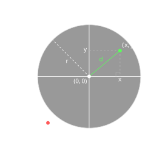

Python Basics - Float#
PREREQUISITES:
Having read basics 1 - integers
Having read basics 2 - booleans
Real numbers#
Python saves the real numbers (floating point numbers) in 64 bit of information divided by sign, exponent and mantissa (also called significand). Let’s see an example:
[2]:
3.14
[2]:
3.14
[3]:
type(3.14)
[3]:
float
WARNING: you must use the dot instead of comma!
So you will write 3.14 instead of 3,14
Be very careful, whenever you copy numbers from documents in latin languages, they might contain very insidious commas!
Scientifical notation#
Whenever numbers are very big or very small, to avoid having to write too many zeros it is convenient to use scientifical notation with the e like \(xen\) which multiplies the number x by \(10^n\)
With this notation, in memory are only put the most significative digits ( the mantissa ) and the exponent, thus avoiding to waste space.
[4]:
75e1
[4]:
750.0
[5]:
75e2
[5]:
7500.0
[6]:
75e3
[6]:
75000.0
[7]:
75e123
[7]:
7.5e+124
[8]:
75e0
[8]:
75.0
[9]:
75e-1
[9]:
7.5
[10]:
75e-2
[10]:
0.75
[11]:
75e-123
[11]:
7.5e-122
QUESTION: Look at the following expressions, and try to find which result they produce (or if they give an error):
print(1.000.000)
print(3,000,000.000)
print(2000000.000)
print(2000000.0)
print(0.000.123)
print(0.123)
print(0.-123)
print(3e0)
print(3.0e0)
print(7e-1)
print(3.0e2)
print(3.0e-2)
print(3.0-e2)
print(4e2-4e1)
Too big or too small numbers#
Sometimes calculations on very big or extra small numbers may give as a result math.nan (Not a Number) or math.inf. For the moment we just mention them, we will come back to this when we talk about NumPy…
Exercise - circle#
✪ Calculate the area of a circle at the center of a soccer ball (radius = 9.1m), remember that \(area=pi*r^2\)
Your code should print as result 263.02199094102605
[ ]:
# write here
Show solution
[ ]:
r = 9.15
pi = 3.1415926536
area = pi*(r**2)
print(area)
Note that the parenthesis around the squared r are not necessary because the power operator has the precedence, but they may help in augmenting the code readability.
We recall here the operator precedence:
Operator |
Description |
|---|---|
|
Power (maximum precedence) |
|
unary plus and minus |
|
Multiplication, division, integer division, modulo |
|
Addition and subtraction |
|
comparison operators |
|
equality operators |
|
Logical operators (minimum precedence) |
Exercise – Point Inside a Circle#
Consider a circle of radius r centered at the origin (0, 0).
Given the coordinates (x, y) of a point, write a Python expression that returns:
Trueif the point is inside or on the boundary of the circle;Falseotherwise.
Use the following variables:
x # x-coordinate of the point
y # y-coordinate of the point
r # radius of the circle
The distance between (x, y) and the origin is:
\(d = \sqrt{x^2 + y^2}\)
Requirements#
Use
math.sqrt()to compute the distance.Do not use
if.Your solution must be a single Boolean expression.
Hint: Compare the distance of the point from the origin with the radius r.

[ ]:
import math
r = 50
x,y = 35,20 # A: True
#x,y = 45,-40 # B: False
#x,y = 10,-40 # C: True
#x,y = -41,-46 # D: False
#x,y = -30,-10 # E: True
#x,y = -35,35 # F: True
#x,y = -37,37 # G: False
# write here
Show solution
[ ]:
import math
r = 50
x,y = 35,20 # A: True
#x,y = 45,-40 # B: False
#x,y = 10,-40 # C: True
#x,y = -41,-46 # D: False
#x,y = -30,-10 # E: True
#x,y = -35,35 # F: True
#x,y = -37,37 # G: False
dist = math.sqrt(x**2 + y**2)
dist < r
Exercise - fractioning#
✪ Write some code to calculate the value of the following formula for x = 0.000003, you should obtain 2.753278226511882
[ ]:
x = 0.000003
# write here
Show solution
[ ]:
x = 0.000003
import math
- math.sqrt(x+3) / (((x+2)**3)/math.log(x))
Exercise - summation#
Write some code to calculate the value of the following expression (don’t use cycles, write down all calculations), you should obtain 20.53333333333333
[ ]:
# write here
Show solution
[ ]:
((1**4) / (1+2)) + ((2**4) / (2+2)) + ((3**4) / (3+2))
Reals - conversion#
If we want to convert a real to an integer, several ways are available:
Function |
Description |
Mathematical symbol |
Result |
|---|---|---|---|
|
round x to inferior integer |
\[\lfloor{8.7}\rfloor\]
|
8 |
|
round x to inferior integer |
\[\lfloor{8.7}\rfloor\]
|
8 |
|
round x to superior integer |
\[\lceil{5.3}\rceil\]
|
6 |
|
round x to closest integer |
\[\lfloor{2.49}\rceil\]
|
2 |
\[\lfloor{2.51}\rceil\]
|
3 |
QUESTION: Look at the following expressions, and for each of them try to guess which result it produces (or if it gives an error).
math.floor(2.3)
math.floor(-2.3)
round(3.49)
round(3.51)
round(-3.49)
round(-3.51)
math.ceil(8.1)
math.ceil(-8.1)
QUESTION: Given a float x, the following formula is:
math.floor(math.ceil(x)) == math.ceil(math.floor(x))
always
Truealways
Falsesometimes
Trueand sometimesFalse(give examples)
ANSWER: 3: for integers like x=2.0 it is True, in other cases like x=2.3 it is False
QUESTION: Given a float x, the following formula is:
math.floor(x) == -math.ceil(-x)
always
Truealways
Falsesometimes
Trueand sometimesFalse(give examples)
ANSWER: 1.
Exercise - Invigorate#
✪ Excessive studies lead you search on internet recipes of energetic drinks. Luckily, a guru of nutrition just posted on her Instagram channel @HealthyDrink this recipe of a miracle drink:
Pour in a mixer 2 decilitres of kiwi juice, 4 decilitres of soy sauce, and 3 decilitres of shampoo of karitè bio. Mix vigorously and then pour half drink into a glass. Fill the glass until the superior deciliter. Swallow in one shot.
You run shopping the ingredients, and get ready for mixing them. You have a measuring cup with which you transfer the precious fluids, one by one. While transfering, you always pour a little bit more than necessary (but never more than 1 decilitre), and for each ingredient you then remove the excess.
DO NOT use subtractions, try using only rounding operators
Example - given:
kiwi = 2.4
soia = 4.8
shampoo = 3.1
measuring_cup = 0.0
mixer = 0
glass = 0.0
Your code must print:
I pour into the measuring cup 2.4 dl of kiwi juice, then I remove excess until keeping 2 dl
I transfer into the mixer, now it contains 2.0 dl
I pour into the measuring cup 4.8 dl of soia, then I remove excess until keeping 4 dl
I transfer into the mixer, now it contains 6.0 dl
I pour into the measuring cup 3.1 dl of shampoo, then I remove excess until keeping 3 dl
I transfer into the mixer, now it contains 9.0 dl
I pour half of the mix ( 4.5 dl ) into the glass
I fill the glass until superior deciliter, now it contains: 5 dl
[ ]:
import math
kiwi = 2.4
soy = 4.8
shampoo = 3.1
measuring_cup = 0.0
mixer = 0.0
glass = 0.0
# write here
Show solution
[ ]:
import math
kiwi = 2.4
soy = 4.8
shampoo = 3.1
measuring_cup = 0.0
mixer = 0.0
glass = 0.0
print('I pour into the measuring cup', kiwi, 'dl of kiwi juice, then I remove excess until keeping', int(kiwi), 'dl')
mixer += int(kiwi)
print('I transfer into the mixer, now it contains', mixer, 'dl')
print('I pour into the measuring cup', soy, 'dl of soia, then I remove excess until keeping', int(soy), 'dl')
mixer += int(soy)
print('I transfer into the mixer, now it contains', mixer, 'dl')
print('I pour into the measuring cup', shampoo, 'dl of shampoo, then I remove excess until keeping', int(shampoo), 'dl')
mixer += int(shampoo)
print('I transfer into the mixer, now it contains', mixer, 'dl')
glass = mixer/2
print('I pour half of the mix (', glass, 'dl ) into the glass')
print('I fill the glass until superior deciliter, now it contains:', math.ceil(glass), 'dl')
Exercise - roundminder#
✪ Write some code to calculate the value of the following formula for x = -5.51, you should obtain 41
[ ]:
import math
x = -5.51 # 41
#x = -5.49 # 30
# write here
Show solution
[ ]:
import math
x = -5.51 # 41
#x = -5.49 # 30
abs(math.ceil(x)) + round(x)**2
Reals - equality#
WARNING: what follows is valid for all programming languages!
Some results will look weird but this is the way most processors (CPU) operates, independently from Python.
When floating point calculations are performed, the processor may introduce rounding errors due to limits of internal representation. Under the hood the numbers like floats are memorized in a sequence of binary code of 64 bits, according to IEEE-754 floating point arithmetic standard: this imposes a physical limit to the precision of numbers, and sometimes we get surprises due to conversion from decimal to binary. For example, let’s try printing 4.1:
[18]:
print(4.1)
4.1
For our convenience Python is showing us 4.1, but in reality a different number ended up in the processor memory! Which one? To discover what it hides, with format function we can explicitly format the number to, for example 55 digits of precision by using the f format specifier:
[19]:
format(4.1, '.55f')
[19]:
'4.0999999999999996447286321199499070644378662109375000000'
We can then wonder what the result of this calculus might be:
[20]:
print(7.9 - 3.8)
4.1000000000000005
We note the result is still different from the expected one! By investigating further, we notice Python is not even showing all the digits:
[21]:
format(7.9 - 3.8, '.55f')
[21]:
'4.1000000000000005329070518200751394033432006835937500000'
What if wanted to know if the two calculations with float produce the ‘same’ result?
WARNING: AVOID == WITH FLOATS!
To understand if the result between the two calculations with the floats is the same, YOU CANNOT use the == operator !
[22]:
7.9 - 3.8 == 4.1 # TROUBLE AHEAD!
[22]:
False
Instead, you should prefer alternative that evaluate if a float number is close to anoter, like for example the handy function math.isclose:
[23]:
import math
math.isclose(7.9 - 3.8, 4.1) # MUCH BETTER
[23]:
True
By default math.isclose uses a precision of 1e-09, but, if needed, you can also pass a tolerance limit in which the difference of the numbers must be so to be considered equal:
[24]:
math.isclose(7.9 - 3.8, 4.1, abs_tol=0.000001)
[24]:
True
QUESTION: Can we perfectly represent the number \(\sqrt{2}\) as a float?
ANSWER: \(\sqrt{2}\) is irrational so there’s no hope of a perfect representation, any calculation will always have a certain degree of imprecision.
QUESTION: Which of these expressions give the same result?
import math
print('a)', math.sqrt(3)**2 == 3.0)
print('b)', abs(math.sqrt(3)**2 - 3.0) < 0.0000001)
print('c)', math.isclose(math.sqrt(3)**2, 3.0, abs_tol=0.0000001))
ANSWER: b) and c) give True. a) gives False, because durting floating point calculations rounding errors are made.
Exercise - quadratic#
✪ Write some code to calculate the zeroes of the equation \(ax^2-b = 0\)
Show numbers with 20 digits of precision
At the end check that by substituting the value obtained
xinto the equation you actually obtain zero.
Example - given:
a = 11.0
b = 3.3
after your code it must print:
11.0 * x**2 - 3.3 = 0 per x1 = 0.54772255750516607442
11.0 * x**2 - 3.3 = 0 per x2 = -0.54772255750516607442
Is 0.54772255750516607442 a solution? True
Is -0.54772255750516607442 a solution? True
[ ]:
a = 11.0
b = 3.3
# write here
Show solution
[ ]:
a = 11.0
b = 3.3
import math
x1 = math.sqrt(b/a)
x2 = -math.sqrt(b/a)
print(a, "* x**2 -",b,"= 0 per x1 =", format(x1, '.20f'))
print(a, "* x**2 -",b,"= 0 per x2 =", format(x2, '.20f'))
# we need to change the default tolerance value
print("Is", format(x1, '.20f'), "a solution?", math.isclose(a*(x1**2) - b,0, abs_tol=0.00001))
print("Is", format(x2, '.20f'), "a solution?", math.isclose(a*((x2)**2) - b,0, abs_tol=0.00001))
Exercise - trendy#
✪✪ You are already thinking about next vacations, but there is a big problem: where do you go, if you don’t have a selfie-stick? You cannot leave with this serious anxiety: to uniform yourself to this mass phenomena you must buy the stick which is most similar to others. You then conduct a rigourous statistical survey among turists obssessed by selfie sticks with the goal to find the most frequent brands of sticks, in other words, the mode of the frequencies. You obtain these results:
[26]:
b1,b2,b3,b4,b5 = 'TooManyLikes', 'Boombasticks', 'Timewasters Inc', 'Vanity 3.0','TrashTrend' # brand
f1,f2,f3,f4,f5 = 0.25, 0.3, 0.1, 0.05, 0.3 # frequencies (as percentages)
We deduce that masses love selfie-sticks of the brand 'Boombasticks' and TrashTrend, both in a tie with 30% turists each. Write some code which prints this result:
TooManyLikes is the most frequent? False ( 25.0 % )
Boombasticks is the most frequent? True ( 30.0 % )
Timewasters Inc is the most frequent? False ( 10.0 % )
Vanity 3.0 is the most frequent? False ( 5.0 % )
TrashTrend is the most frequent? True ( 30.0 % )
WARNING: your code must work with ANY series of variables !!
[ ]:
b1,b2,b3,b4,b5 = 'TooManyLikes', 'Boombasticks', 'Timewasters Inc', 'Vanity 3.0','TrashTrend' # brand
f1,f2,f3,f4,f5 = 0.25, 0.3, 0.1, 0.05, 0.3 # frequencies (as percentages) False True False False True
# CAREFUL, they look the same but it must work also with these!
#f1,f2,f3,f4,f5 = 0.25, 0.3, 0.1, 0.05, 0.1 + 0.2 # False True False False True
# write here
Show solution
[ ]:
b1,b2,b3,b4,b5 = 'TooManyLikes', 'Boombasticks', 'Timewasters Inc', 'Vanity 3.0','TrashTrend' # brand
f1,f2,f3,f4,f5 = 0.25, 0.3, 0.1, 0.05, 0.3 # frequencies (as percentages) False True False False True
# CAREFUL, they look the same but it must work also with these!
#f1,f2,f3,f4,f5 = 0.25, 0.3, 0.1, 0.05, 0.1 + 0.2 # False True False False True
mx = max(f1,f2,f3,f4,f5)
print(b1, 'is the most frequent?', math.isclose(f1,mx), '(', format(f1*100.0, '.1f'),'% )')
print(b2, 'is the most frequent?', math.isclose(f2,mx), '(', format(f2*100.0, '.1f'),'% )')
print(b3, 'is the most frequent?', math.isclose(f3,mx), '(', format(f3*100.0, '.1f'),'% )')
print(b4, 'is the most frequent?', math.isclose(f4,mx), '(', format(f4*100.0, '.1f'),'% )')
print(b5, 'is the most frequent?', math.isclose(f5,mx), '(', format(f5*100.0, '.1f'),'% )')
Decimal numbers#
For most applications float numbers are sufficient, if you are conscius of their limits of representation and equality. If you really need more precision and/or preditability, Python offers a dedicated numeric type called Decimal, which allows arbitrary precision. To use it, you must first import decimal library:
[28]:
from decimal import Decimal
You can create a Decimal from a string:
[29]:
Decimal('4.1')
[29]:
Decimal('4.1')
WARNING: if you create a Decimal from a costant, use a string!
If you pass a float you risk losing the utility of Decimals:
[30]:
Decimal(4.1) # this way I keep the problems of floats ...
[30]:
Decimal('4.0999999999999996447286321199499070644378662109375')
Operations between Decimals produce other Decimals:
[31]:
Decimal('7.9') - Decimal('3.8')
[31]:
Decimal('4.1')
This time, we can freely use the equality operator and obtain the same result:
[32]:
Decimal('4.1') == Decimal('7.9') - Decimal('3.8')
[32]:
True
Some mathematical functions are also supported, and often they behave more predictably (note we are not using math.sqrt):
[33]:
Decimal('2').sqrt()
[33]:
Decimal('1.414213562373095048801688724')
Remember: computer memory is still finite!
Decimals can’t be solve all problems in the universe: for example,\(\sqrt{2}\) will never fit the memory of any computer! We can verify the limitations by squaring it:
[34]:
Decimal('2').sqrt()**Decimal('2')
[34]:
Decimal('1.999999999999999999999999999')
The only thing we can have more with Decimals is more digits to represent numbers, which if we want we can increase at will until we fill our pc memory. In this book we won’t talk anymore about Decimals because typically they are meant only for specific applications, for example, if you need to perform fincancial calculations you will probably want very exact digits!
Continue#
Go on with Python Basics - Challenges